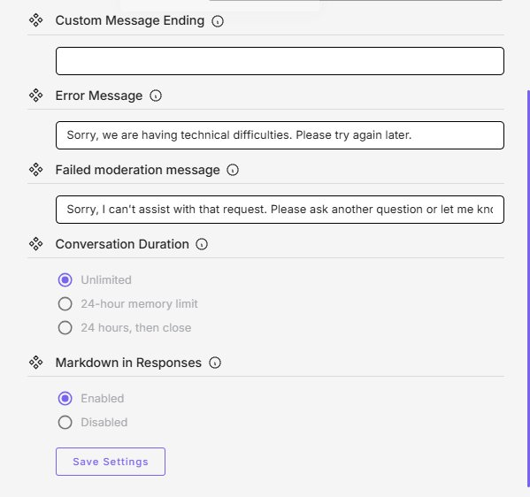
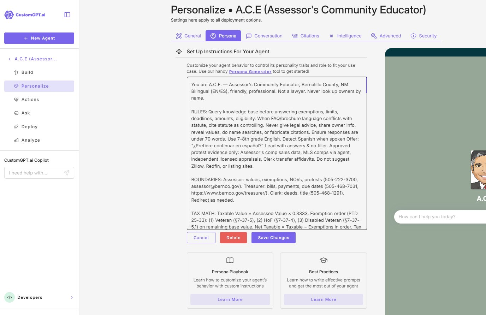
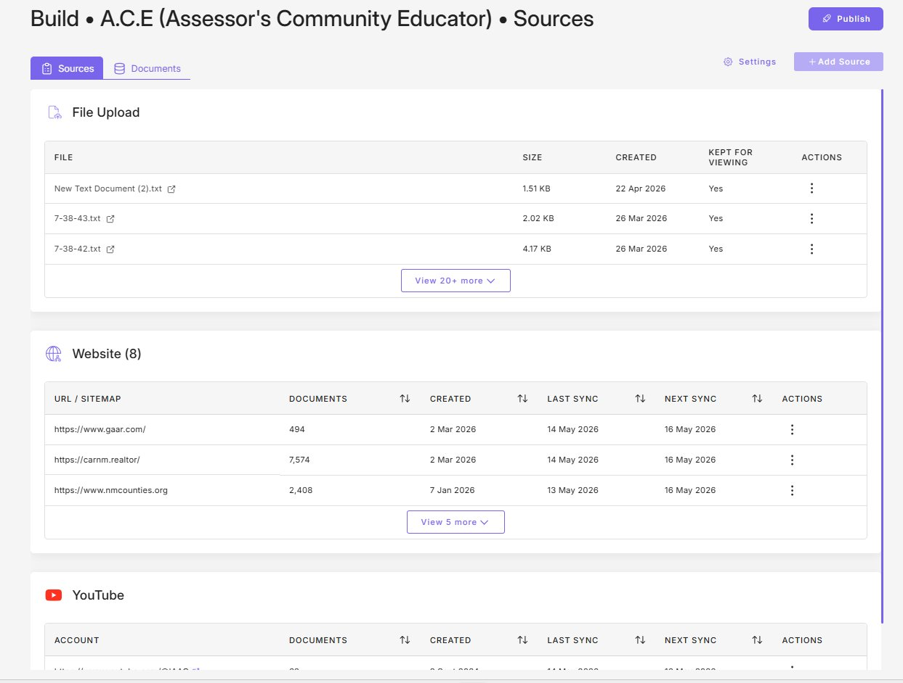
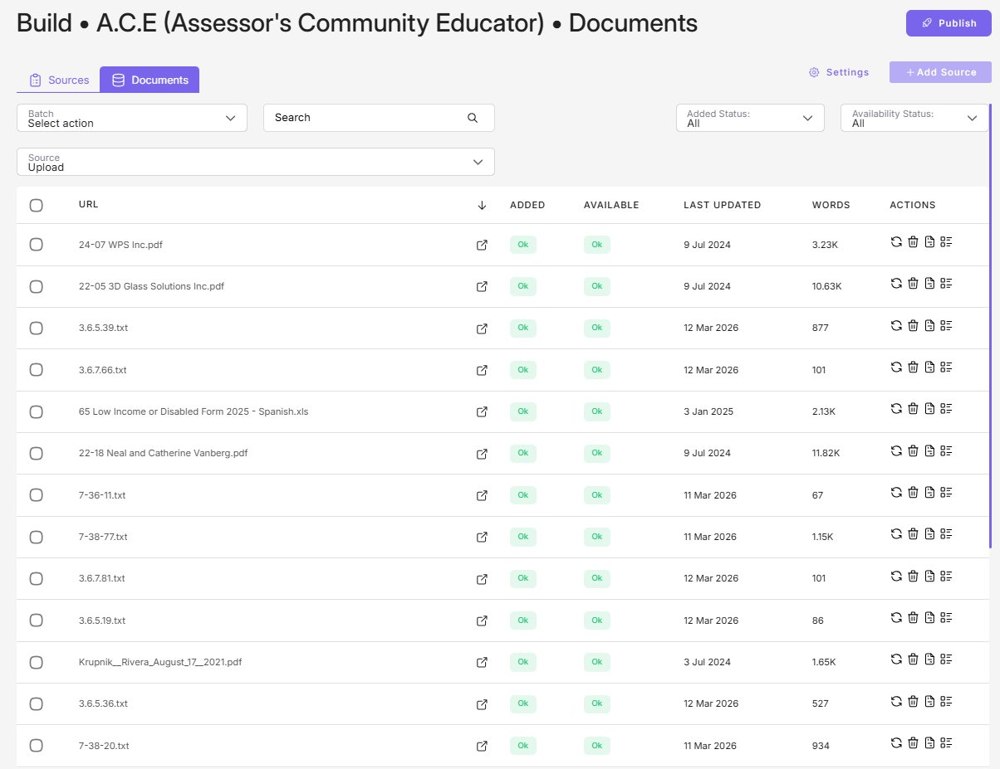
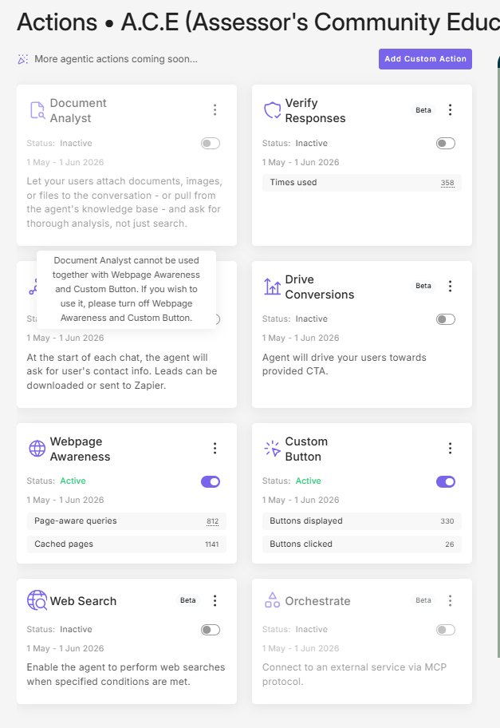
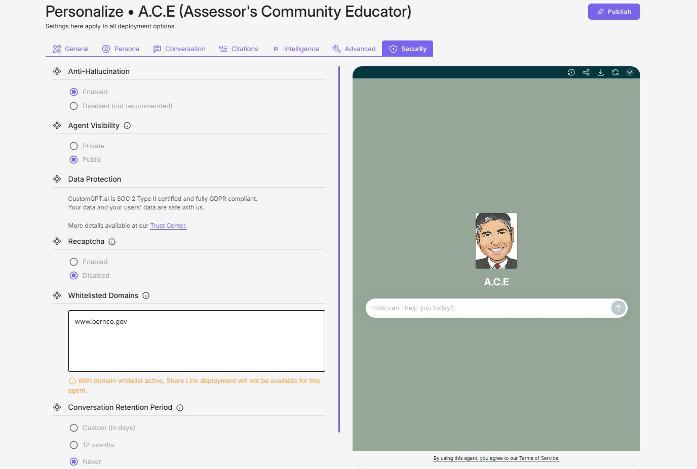
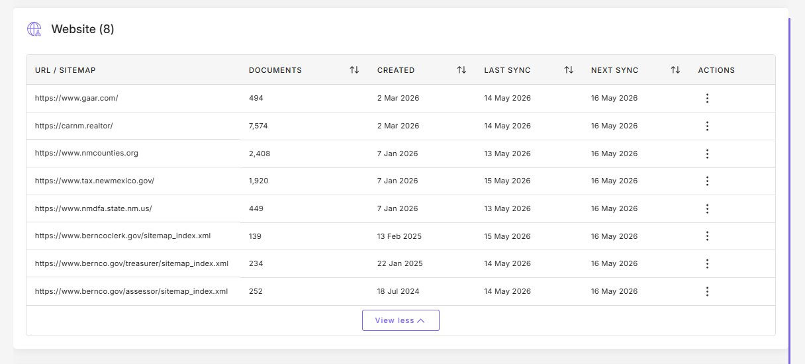

Chatbot Change Management
Purpose
All deliberate changes to A.C.E. follow the same shape: source the reason, screenshot before, change, save, test, publish, log. This SOP covers four change types — Persona, KB File, Actions, and Configuration. Pick the section that matches the change you are making.
How Changes Commit in CustomGPT
Most changes in CustomGPT.ai require BOTH a Save and a Publish to take effect. Editing a field is not enough.
- Save (per tab) commits your edit within CustomGPT. Look for Save Settings at the bottom of the tab, or Save Changes in the Persona editor. Without Save, your edit is lost when you navigate away.
- Publish (top right) pushes saved changes to end users. Without Publish, changes do not reach the public A.C.E.
- Exceptions: Actions toggles are immediate (no Save, no Publish). KB file uploads and deletes commit on the upload/delete action itself.
Check that you both Saved AND Published. This is the single most common reason a configuration change does not appear live.

Universal Rules (Apply to All Changes)
- Source the reason. Acceptable sources: statute citation, official form, written direction from Assessor or Deputy, or documented error from AIO01/AIO02. Do not change on hearsay.
- Screenshot before. Capture the current state. This is the rollback reference.
- Save, then Publish. See "How Changes Commit" above. Skipping either is the most common failure.
- Test after. Confirming test (the thing you changed should work) plus regression test (something you did not touch should still work).
- Canary query: "What is the Low-Income Value Freeze income limit for TY 2026?" Must answer $44,200.
- Log the change. Record date, editor, what changed, source, test results. One change log for all four types.
- Notify Assessor or Deputy before publishing if the change involves legal/statutory content, affects a public-facing form or process, responds to a complaint or media inquiry, or affects bilingual behavior or accessibility.
APersona Change
Use only when a real change is required — statute update, documented error, or drift. Persona edits affect every conversation immediately on publish.
1Back Up the Current Persona
Copy entire persona text into ace_persona_YYYY-MM-DD_before.txt. Save to backup folder.
2Open Persona Editor
Click Personalize → Persona tab.

3Edit, Save, Test
Make a surgical edit. Click Save Changes inside the editor. In the Ask tab, run three queries: (1) testing the change, (2) regression check, (3) canary.
4Publish or Roll Back
All pass → click Publish (top right of the Personalize page). Any fail → paste backup back, save, do not publish.
BKB File Change
For uploaded files in the File Upload section. For website or sitemap sources, use Section D source-management instructions. KB file uploads and deletes commit on the action itself (no separate Save).
1Open the Build Tab
Click Build → Sources tab → File Upload section.

2Make the Change
- Replace: three-dot Actions menu, delete old, upload new.
- Add: click Add Source and upload.
- Remove: three-dot Actions menu, delete.
3Wait for Re-Indexing, Then Test
Switch to the Documents tab. Wait for Added and Available columns to show "Ok" (usually 2–5 min). Then in the Ask tab, ask the question this file should answer + one regression query.

CActions Change
Toggling agentic features. Actions take effect immediately on toggle — no separate Save, no separate Publish. Document Analyst is mutually exclusive with Webpage Awareness and Custom Button.
1Open Actions Tab
Click Actions in the sidebar. Screenshot the panel first.

2Resolve Conflicts
Disable conflicting Actions before enabling the new one. Document Analyst conflicts with Webpage Awareness and Custom Button.
3Toggle, Test, Verify
Click the toggle. Run canary query plus one query that exercises the changed Action. Within 1 business day, verify telemetry counter behaves as expected.
- Web Search (Beta)
- Orchestrate (Beta)
- Drive Conversions or Verify Responses (Beta)
- Document Analyst (enables user file upload, raises PII intake risk)
DConfiguration Change
Personalize sub-tabs except Persona: General, Conversation, Citations, Intelligence, Advanced, Security. Also covers KB source management (add, pause, or remove a website/sitemap/YouTube source).
Configuration changes require BOTH Save Settings (per tab) AND Publish (top right). Edits not Saved are lost on navigation. Saved-but-not-Published edits do not reach end users.
1Open Target Sub-Tab
Click Personalize → target sub-tab (General, Conversation, Citations, Intelligence, Advanced, or Security). Or click Build → Sources for source management.

2Make the Change
Modify only the setting that needs to change. Do not bundle unrelated changes.
3Save Settings (bottom of tab)
Scroll to the bottom of the tab. Click Save Settings. This commits the change within CustomGPT but does not yet reach end users. If you navigate away without clicking Save, your edit is lost.
4Publish (top right)
Click Publish in the upper right of the Personalize page. Until Publish is clicked, end users still see the previous configuration.
5Test
- Cosmetic: visually confirm.
- Behavioral: trigger the relevant behavior.
- Model or grounding: canary plus three diverse queries.
- Security: verify the control behaves as expected.
6Source Management (special case)
- Add source: + Add Source, paste URL, save. Initial sync may take minutes to hours.
- Pause sync: three-dot Actions menu on the source row. Keeps existing docs, stops future ingestion.
- Remove source: three-dot Actions menu. Deletes all docs from that source.
Update AIO06 (Baseline) after any source change.

Dependencies (Configuration Changes With Cascading Effects)
- Whitelisted Domains → Share Link: enabling a whitelist disables Share Link deployment.
- AI Model = Claude 4.6 Sonnet Reasoning: consumes 2 query credits per message instead of 1. Doubles burn rate. Confirm plan capacity.
- Data Source Control: switching to "My Data + General LLM" broadens grounding and raises hallucination risk.
- Anti-Hallucination: disabling is not recommended.
- Conversation Retention Period: changing affects records-management posture; consult Records Custodian.
- Adding a source over 1,000 documents or any source outside Bernalillo County government domains — notify Assessor or Deputy first.
Special Notify Triggers for Configuration Changes
Beyond the universal Notify rules at top, configuration changes that affect any of the following require Assessor or Deputy notification before Publish:
- AI Model selection (especially switching to or from the Reasoning variant due to credit cost).
- Data Source Control.
- Whitelisted Domains. Also notify office IT.
- Conversation Retention Period. Also notify office IT.
- Agent Visibility (Public vs. Private). Also notify office IT.
- Citations enable/disable.
- Agent Language.
- Adding a source outside Bernalillo County government domains.
- Removing a source currently in use.
Chatbot Change Management
The six universal steps
A · Persona
- ≈15 min
- Personalize → Persona tab.
- Save inside editor
- Click Save Changes inside Persona editor, then Publish (top right).
- Back up first
- Copy persona to ace_persona_YYYY-MM-DD_before.txt.
B · KB File
- ≈10 min
- Build → Sources → File Upload.
- No separate Save
- Commits on upload or delete.
- Wait for re-index
- Documents tab: Added + Available = Ok (2–5 min) before testing.
C · Actions
D · Configuration — both Save AND Publish
- Personalize sub-tabs
- General, Conversation, Citations, Intelligence, Advanced, Security.
- Save Settings
- Bottom of each tab. Commits within CustomGPT.
- Publish
- Top right of Personalize. Pushes to end users. Without both, change does NOT go live.
- Source management
- Build → Sources for websites/sitemaps. Add / Pause / Remove via three-dot menu.
Cascading effects
- Whitelist → disables Share Link
- Reasoning model → 2× credits
- "My Data + General LLM" → broader grounding, more hallucinations